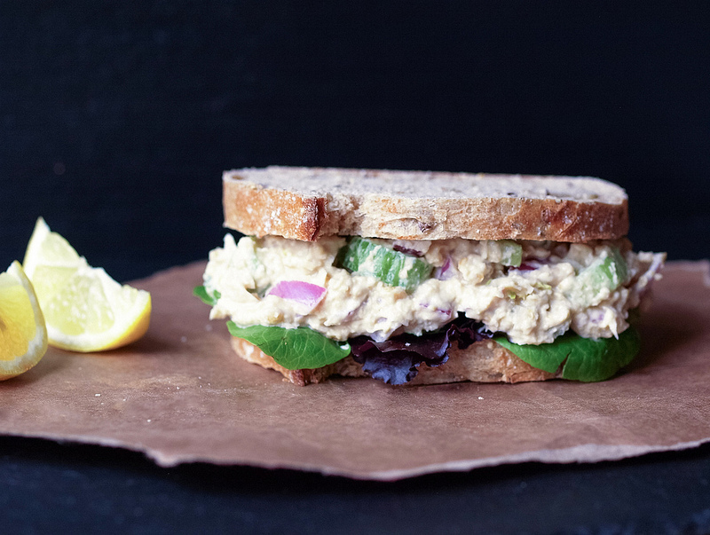
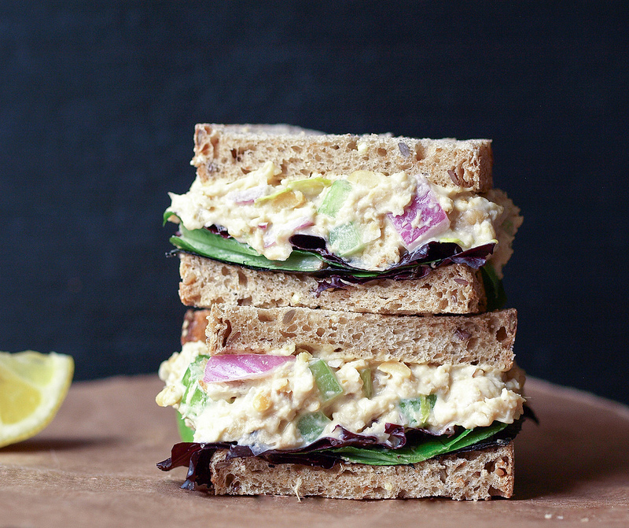
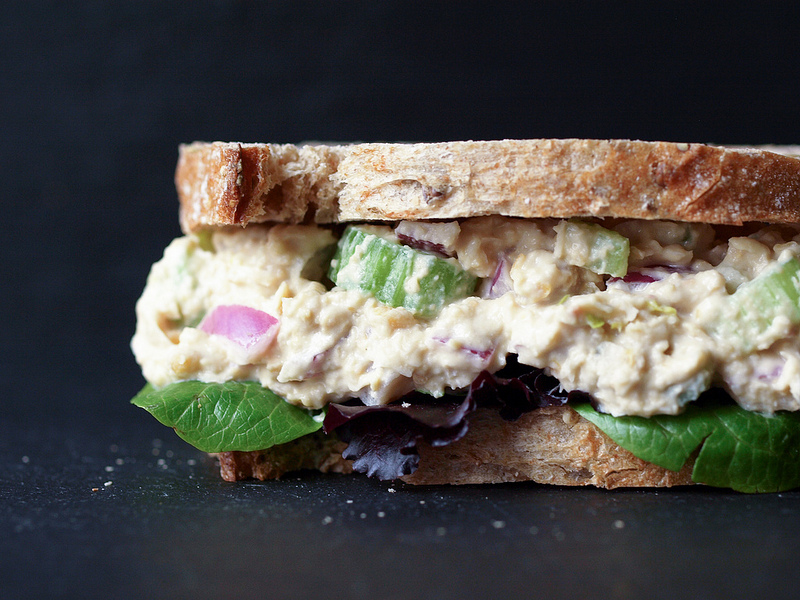

<!DOCTYPE html>
<html lang="en">
	<head>
        <meta charset="UTF-8">
        <meta name="description" content="LAB1">
        <meta name="keywords" content="HTML,CSS,XML,JavaScript">
        <meta name="author" content="Karen Moreno">
        <meta name="viewport" content="width=device-width, initial-scale=1, shrink-to-fit=no">
        <meta http-equiv="X-UA-Compatible" content="IE=edge">
        <title>RECIPE</title>
        <style>
            body{
                background-color: rgb(25, 31, 46);
                color: rgba(231, 232, 240, 0.979);
                text-align: center;
            }
            
            ul, ol{ display: inline-block; text-align: left; 
            }
            h1 {
				text-shadow: 3px 2px red;
				font-size: 2.5em;
				margin-left: 2px;
				font-family: 'Rokkitt', Helvetica, Arial, sans-serif;
			}
            hr{
                display: block;
                margin-top: 0.5em;
                margin-bottom: 0.5em;
                margin-left: auto;
                margin-right: auto;
                border-style: inset;
                border-width: 2px;
	        }
            
        </style>
        <!--the ul ,ol needs display: inline-block; text-align: left; to center because won't center only with body-->
    </head>
    <body>
        <script>
            document.write('<main>');
            document.write('<h1>\‘CHICKPEA OF THE SEA\’ SALAD SANDWICH</h1>');
            //the images cotain a class for future use myImg
            document.write('');
            document.write('</main>');
            //this article describes the finish product and the ingridients
            document.write('<article>');
            document.write('<p>This is a wonderfully simple mock ‘tuna’ salad that can be served many ways.</p>'); 
            document.write('<p>Great alone…or serve on whole grain/artisan bread, bed of leafy greens or simply with crackers.</p>');
            document.write('<p>You could even cut some bell pepper strips or cucumber slices and serve with that, they make great scoopers.</p>');
            document.write('<p>Pairs well with fresh fruit too! It’s healthy, delicious and sustainable. Of course, it’s not going to taste exactly like tuna,</p>');
            document.write('<p>but it will give you the mouth feel and fullness that its predecessor, the ‘tuna salad’ sandwich, gave you.</p>');
            document.write('');
            document.write('<br />');
            document.write('<h3>INGREDIENTS</h3>');
            document.write('<ul>');
            document.write('<li>1 can chickpeas (garbanzo beans) (15 oz)</li>');
            document.write('<li>1/2 cup celery (about 2 small stalks, leaves ok too), chopped</li>');
            document.write('<li>1/2 cup red onion (about 1/2 small), chopped</li>');
            document.write('<li>himalayan salt & cracked pepper to taste</li>');
            document.write('<li>1/4 cup mayonnaise (or vegan alternative)</li>');
            document.write('<li>6 slices whole grain, sprouted whole grain flourless or artisan bread, to serve</li>');
            document.write('<li>1 tablespoon whole grain mustard</li>');
            document.write('<li>2 teaspoons celery seeds</li>');
            document.write('<li>1 1/2 tablespoons umeboshi vinegar</li>');
            document.write('</ul>');
            document.write('</article>');
            //this article starts the steps section
            document.write('<article>');
            document.write('');
            document.write('<br />');
            document.write('<h3>STEPS</h3>');
            document.write('<ol>'); 
            document.write('<li>Place chickpeas in the bowl of a food processor and pulse two or three times to roughly chop.</li>');
            document.write('<li>Add remaining ingredients and pulse two or three times more to incorporate.</li>');
            document.write('<li>Lay out the bread and place the lettuce leaves on two slices. </li>');
            document.write('<li>Spoon on the Chickpea of the Sea and top with the other slice of bread.</li>');
            document.write('<li>Cut in half and enjoy!</li>');
            document.write('</ol>');
            document.write('</article>');
            document.write('<footer>');
            document.write('<hr >');
            document.write('<br />');
            //this is a link will redirect the user to the email
            document.write('<a href="mailto:morenk@mail.broward.edu">SUBSCRIBE FOR MORE RECIPES</a>'); 
            document.write('</footer>');
            document.write('');
        </script>     

    </body>
</html>


